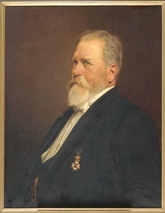
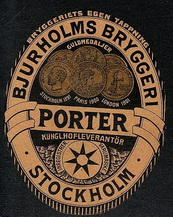
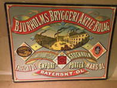

Södermalm i tid och rum
Bjurholms Bryggeri ABPå denna plats, i kvarteren Plogen, Tegen och Täppan har det bryggts öl sedan 1706. Då höll brännvinsbrännaren Mårten Våland i verksamheten och bryggeriet hade bara några få anställda. Bryggeriet hade sedan skiftande ägare, under 1700-talet den stockholmska bryggarfamiljen Rhen och i början av 1800-talet i riksdagsmannen Henrik Daniel Helsingius.
|
 |
År 1852 tog Anders Bjurholm över fabriken som expanderade snabbt. Anders Bjurholm kom från en bondesläkt i Österhaninge socken och konsten att brygga öl hade han lärt sig av brodern Pehr Bjurholm. Anders Bjurholm var en driftig man, han översatte tyska bryggeriböcker, införde öletiketten (1877) och standardiserade den ljusbruna 33 cl ölflaskan (1884), den så kallade knoppflaskan, som blev världens första standardflaska. Han skapade även Svenska Bryggareföreningen och var länge dess ordförande och förgrundsgestalt. Aners Bjurholm köpte bryggeriet den 1 oktober 1859 av Magnus Wilhelm Holmberg. I köpet ingick tomt nr 7 i kvarteret Åsen. |
{kind=link}
I tjugo år var Anders Bjurholm ensam ägare till bryggeriet. År 1858 eller 1859 började han brygga tyskt öl efter den bayerska underjäsningsmetoden. Verksamheten tillväxte stadigt. År 1865 uppförs en stor, modernt inredd iskällare på tomten i kvarteret Åsen. Källaren är genom en underjordisk gång förbunden med bryggeriet på andra sidan Nya Sandbergsgatan.
Trots den expansiva utvecklingen var det bjuholmska bryggeriet ekonomiska ställning ansträngd i början på 1870-talet. Bryggerinäringen höll på att industrialiseras och det krävs tillskott av kapital. A Bjurholm och bankdirektör Albert Norman, gift med hans niece, utfärdade en inbjudan till bildandet av ett bolag för "tillverkning av maltdrycker för avsalu". Konstituerande bolagsstämma hölls den 11 oktober 1873. Kungl Maj:t fastställde den 31 samma månad bolagsordning för Bjurholms Bryggeri Aktiebolag.
| Detta bolag övertog den 16 oktober 1873 egendomen på Tullportsgatan 55 och 57. År 1874 genomfördes nybyggnation och modernisering av bryggeriet. Redan innan bolagsbildningen bryggde Anders Bjurholm i små mängder porter, men lät efter en resa till England sommaren 1876 iordningställa en porterjäskällare. Produkten blev framgångsrik och såldes från och med den 7 mars 1877 i etiketterade flaskor. Det är den första kända öletiketten i Sverige. Det nedlagda bryggeriet i grannfastigheten Tullportsgatan 53 inköptes 2 juli 1883 och rustades upp åren 1883 och 1884. Bolagets vidare expansion möjliggjordes genom inköp i april 1884 av delar av tomterna 6, 9, 10 och 11 i kvarterat Åsen, nu omdöpt till Harven. Dessa förenades med tomten nr 7 i samma kvarter. Här byggdes mellan åren 1885 och 1888 stallar och lagerkällare. |
 |
{kind=link}
År 1858 började man med stor framgång att brygga bayersk öl, dessutom porter och svagdricka. År 1875 ombildades rörelsen till aktiebolag, vilket gav nytt kapital som möjliggjorde utbyggnad av verksamheten och inköp av moderna tyska bryggerimaskiner. Med tiden blev portertillverkningen en betydande huvudprodukt. Bjurholms porter höll mycket hög kvalitet; på världsutställningen i Paris 1878 fick man en bronsmedalj i konkurrens med engelska tillverkare.
|
 |
År 1889, när kartellen AB Stockholms Bryggerier bildades, sålde Anders Bjurholm sitt bryggeri till detta konsortium. Fabriken hade då som mest 97 arbetare. Av åldersskäl drog sig Anders Bjurholm efter försäljningen tillbaka från arbetet vid bryggeriet. År 1904 producerades endast porter samt Pale Ale, samtidigt ändrades bryggeriets namn till Bjurholms Porterbryggeri. År 1910 lades verksamheten ner och AB Stockholms Bryggerier upphörde med all produktion av porter, i gengäld erhöll man en summa av 675 000 kronor från porterbryggeriet D. Carnegie & C:o i Göteborg. |
{kind=link}
I början av 1960-talet revs de flesta byggnaderna, några mindre stod kvar till 1980. I 1960-talets början byggde HSB bostadsrättslägenheter i kvarteret med Per Persson som arkitekt. Idag vittnar namnen Bjurholmsgatan och Bjurholmsplan om kvarterets historia.